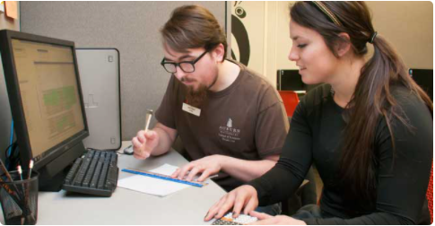
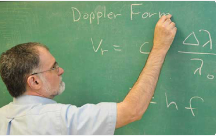
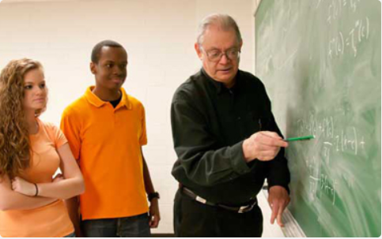
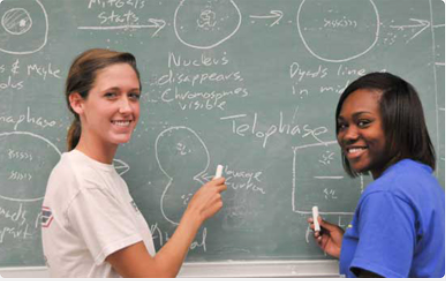
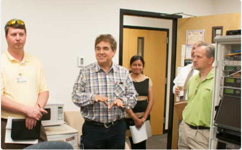
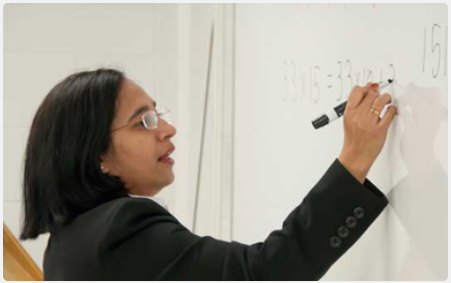

Student Resources

Academic Advising
Our advisors are here to help. Proper advising will serve to efficiently guide you through all the necessary steps towards your academic goals.

Career Options and Recent Alumni
Numerous career options are available in the field of Computer Science.

Scholarships
There are several undergraduate scholarships and graduate assistantships available to students majoring in Computer Science, and Computer Information Systems & Cyber Security.

Programs of Study
The department offers a undergraduate Computer Science major. We also offer two master degree programs: 1) Computer Science, and 2) Computer Information Systems and CyberSecurity.

Student Clubs and Organizations
We have an active student Computer Science Club.
